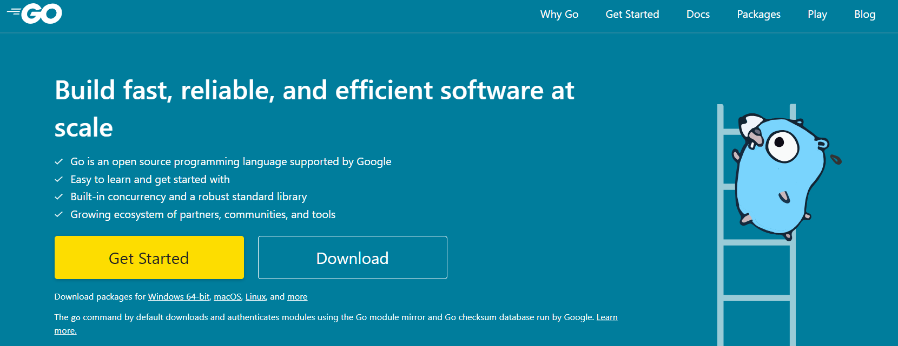

开启我学习新编程语言的篇章。笔记嘛，不多说，直入主题。
什么是 Go? Go 是谷歌支持的开源编程语言,易于学习和入门,内置并发和强大的标准库,不断发展的合作伙伴、社区和工具生态系统。
官网： https://go.dev/

文档地址: https://go.dev/doc/
packages : https://pkg.go.dev/
Golang 的安装 通过官网下载对应的包，下载地址：https://go.dev/dl/
windows 系统下的安装 双击打开下载的 msi 可执行文件，估计提示进行安装即可，若不修改默认的安装为 C:/Program Files/go目录下，会自动添加系统环境变量。安装好之后打开命令执行 go version 验证安装情况。
Linux 系统下的安装 将文件下载到到当前目录，然后使用命令 mkdir /usr/local/go 创建一个 go 目录，把文件直接解压缩到 go 目录下，或者解压缩到当前目录下并移动 /usr/local/go目录下，之后编辑当前用户目录下的./profile 或者 /etc/profile文件,在文件末尾添加如下环境变量，内容如下：
1 export PATH=/usr/local/go/bin
保存并退出之后在终端执行 source命令使配置生效,然后通过 go version验证是否成功。
mac 系统下的安装 如果已经安装有 Homebrew 包管理软件，可以直接使用一下命令来安装：
如果没有则和一下 Linux 安装步骤一样。
第一个 Golang 小程序 实现步骤 在任意位置创建一个英文名的文件夹，在文件夹里创建一个 go 后缀的文件，列如：test.go,在 test.go 文件中输入一下内容:
1 2 3 4 5 6 7 8 9 package mainimport "fmt" func main () fmt.Println("Hello World" ) }
保存在命令行编译执行 go run test.go,便会在终端输出 Hello World字符。
main 包的意义 在 Go 语言里，命名为 main 的包具有特殊的含义。Go 语言的编译程序会试图把这种名字的包编译为二进制可执行文件。所有用 Go 语言编译的可执行程序都必须有一个名叫 main 的包。一个可执行程序有且仅有一个 main 包。当编译器发现某个包的名字为 main 时，它一定也会发现名为 main()的函数，否则不会创建可执行文件。main()函数是程序的入口，所以，如果没有这个函数，程序就没有办法开始执行。程序编译时，会使用声明 main 包的代码所在的目录的目录名作为二进制可执行文件的文件名。
Go 基本常用的命令 基本 go help 命令
build: 编译包和依赖
clean: 移除对象文件
doc: 显示包或者符号的文档
env: 打印 go 的环境信息
bug: 启动错误报告
fix: 运行 go tool fix
fmt: 运行 gofmt 进行格式化
generate: 从 processing source 生成 go 文件
get: 下载并安装包和依赖
install: 编译并安装包和依赖
list: 列出包
run: 编译并运行 go 程序
test: 运行测试
tool: 运行 go 提供的工具
version: 显示 go 的版本
vet: 运行 go tool vet
详细参考文档：https://golang.org/doc/cmd
如何编写 golang 代码 代码组织 go 应用使用包 和模块 来组织代码，包对应到文件系统就是文件夹，模块就是**.go**的 go 源文件。一个包中会有多个模块，或者多个子包。
go 项目管理工具 早期的 go 项目使用 gopath 来管理项目，不方便而且容易出错，从 golang 1.11 开始使用 gomod 管理项目，当然还有第三方模块例如 govendor，我们给大家结束 gomod 的使用
创建一个应用
首先，创建一个模块路径，例如：xiaobaibk.com/hello，前缀一般为域名
在该目录中执行 go mod init xiaobaibk.com/hello，该命令会创建一个 go.mod 文件，内容如下：
1 2 module xiaobaibk.com/hello go 1.17
在 hello 文件夹中创建一个 test.go 文件内容如下：
1 2 3 4 5 6 package mainimport "fmt" func main () fmt.Println("这是第一个Go的程序" ) }
构建并安装程序，执行如下命令，该命令会在 GOPATH 或者 GOBIN 环境变量下面创建一个 hello.exe 可执行文件
1 go install xiaobaibk.com/hello/
执行，输入 hello，运行结果如下
创建子包，创建一个 morestrings 子包，就是创建一个子文件夹，在 hello 目录下面
创建一个子模块，morestrings.go，内容如下：
1 2 3 4 5 6 7 8 9 package morestrings func ReverseRunes(s string) string { r := []rune(s) for i, j := 0, len(r)-1; i < len(r)/2; i, j = i+1, j-1 { r[i], r[j] = r[j], r[i] } return string(r) }
切换到子包目录下面，执行编译
在 test.go 中导入子模块
1 fmt.Println(morestrings.ReverseRunes("!oG ,olleH"))
安装
1 go install xiaobai.com/hello/
执行
导入网络模块，查找地址：https://pkg.go.dev/
1 2 3 4 5 6 7 8 9 10 11 12 13 package main import ( "xiaobai.com/hello/morestrings" "fmt" "github.com/google/go-cmp/cmp" ) func main() { fmt.Println(morestrings.ReverseRunes("!oG ,olleH")) fmt.Println(cmp.Diff("Hello World", "Hello Go")) }
执行命令，go mod tidy,查看 go.mod 变量
1 2 3 4 5 module duoke360.com/hello go 1.17 require github.com/google/go-cmp v0.5.6
安装
1 go install xiaobaibk.com/hello/
执行
1 2 3 4 5 Hello, Go! string( - "Hello World", + "Hello Go", )
Golang 变量 变量是计算机语言中能储存 计算结果或能表示值的抽象概念。不同的变量保存的数据类型可能会不一样。
声明变量 Go 语言中的变量需要声明后才能使用，同一作用域内不支持重复声明。并且 Go 语言的变量声明后必须使用。
声明变量的语法
var：声明变量关键字
identifier：变量名称
type：变量类型
例如
1 2 3 4 5 6 7 8 9 package mainimport "fmt" func main () var name string var age int var ok bool }
批量声明 使用一个 var关键字，把一些变量写在一个括号 ()里
1 2 3 4 5 6 7 8 package main func main() { var ( name string age int ok bool ) }
变量的初始化 Go 语言在声明变量的时候，会自动对变量对应的内存区域进行初始化操作。每个变量会被初始化成其类型的默认值，例如：整型和浮点型变量的默认值为 0。字符串变量的默认值为空字符串 “”。布尔型变量默认为 false。切片、函数、指针变量的默认为 nil。
变量初始化语法
例如
1 2 3 4 5 6 package mainfunc main () var name string = "yaowanyu" var site string = "xiaobaibk.com" var age int = 18 }
类型推导
我们在声明变量时，可以根据初始化值进行类型推导，从而省略类型。
1 2 3 4 5 6 package mainfunc main () var name = "xiaoyu" var site = "www.xiaobaibk.com" var age = 30 }
初始化多个变量
可以一次初始化多个变量，中间用逗号分隔。
1 2 3 4 package main func main() { var name, site, age = "yaowanyu", "www.xiaobaibk.com", 30 }
短变量声明 在函数内部，可以使用 :=运算符对变量进行声明和初始化。
1 2 3 4 5 6 7 package main func main() { name := "xiaoyu" site := "www.xiaobaibk.com" age := 20 }
注意：这种方法只适合在函数内部，函数外面不能使用。
匿名变量 如果我们接收到多个变量，有一些变量使用不到，可以使用下划线 _表示变量名称，这种变量叫做匿名变量。例如：
1 2 3 4 5 6 7 8 9 10 11 12 package main import "fmt" func getNameAndAge() (string, int) { return "xiaoyao", 12 } func main() { name, _ := getNameAndAge() fmt.Printf("name: %v\n", name) }
Golang 常量 常量，就是在程序编译阶段 就确定下来的值，而程序在运行时 则无法改变该值。在 Go 程序中，常量可以是数值类型（包括整型、浮点型和复数类型）、布尔类型、字符串类型等。
定义常量的语法 定义一个常量使用 const 关键字，语法格式如下：
1 const constantName [type]= value
const：定义常量关键字
constantName：常量名称
type：常量类型
value：常量的值
实例
1 2 3 4 5 6 7 8 9 10 11 12 13 14 package main func main() { const PI float64 = 3.14 const PI2 = 3.1415 // 可以省略类型 const ( width = 100 height = 200 ) const i, j = 1, 2 // 多重赋值 const a, b, c = 1, 2, "foo" }
const同时声明多个常量时，如果省略了值则表示和上面一行的值相同
1 2 3 4 5 6 7 8 9 10 11 12 13 14 15 package main import "fmt" func main() { const ( a1 = 100 a2 a3 ) fmt.Printf("a1: %v\n", a1) fmt.Printf("a2: %v\n", a2) fmt.Printf("a3: %v\n", a3) }
运行结果
iota
iota 比较特殊，可以被认为是一个可被编译器修改的常量，它默认开始值是 0，每调用一次加 1。遇到 const 关键字时被重置为 0。
实例
1 2 3 4 5 6 7 8 9 10 11 12 13 14 15 package main import "fmt" func main() { const ( a1 = iota a2 = iota a3 = iota ) fmt.Printf("a1: %v\n", a1) fmt.Printf("a2: %v\n", a2) fmt.Printf("a3: %v\n", a3) }
运行结果
使用 _跳过某些值
1 2 3 4 5 6 7 8 9 10 11 12 13 14 package main import "fmt" func main() { const ( a1 = iota _ a2 = iota ) fmt.Printf("a1: %v\n", a1) fmt.Printf("a2: %v\n", a2) }
运行结果
iota声明中间插队
1 2 3 4 5 6 7 8 9 10 11 12 13 14 15 package main import "fmt" func main() { const ( a1 = iota a2 = 100 a3 = iota ) fmt.Printf("a1: %v\n", a1) fmt.Printf("a2: %v\n", a2) fmt.Printf("a3: %v\n", a3) }
运行结果
Golang 布尔类型 go 语言中的布尔类型有两个常量值：true和 false。布尔类型经常用在条件判断 语句，或者循环语句 。也可以用在逻辑表达式 中。
布尔类型 1 2 3 4 5 6 7 8 9 10 11 12 13 14 15 16 17 18 19 20 package main import "fmt" func main() { var b1 bool = true var b2 bool = false var b3 = true var b4 = false b5 := true b6 := false fmt.Printf("b1: %v\n", b1) fmt.Printf("b2: %v\n", b2) fmt.Printf("b3: %v\n", b3) fmt.Printf("b4: %v\n", b4) fmt.Printf("b5: %v\n", b5) fmt.Printf("b6: %v\n", b6) }
运行结果
1 2 3 4 5 6 b1: true b2: false b3: true b4: false b5: true b6: false
用在条件判断中 1 2 3 4 5 6 7 8 9 10 11 12 13 package main import "fmt" func main() { age := 18 ok := age >= 18 if ok { fmt.Println("你已经成年") } else { fmt.Println("你还未成年") } }
运行结果
用在循环语句中 1 2 3 4 5 6 7 8 9 10 package main import "fmt" func main() { count := 10 for i := 0; i < count; i++ { fmt.Printf("i: %v\n", i) } }
用在逻辑表达式中 1 2 3 4 5 6 7 8 9 10 11 12 package main import "fmt" func main() { age := 18 gender := "男" if age >= 18 && gender == "男" { fmt.Println("你是成年男子") } }
注意：不能使用 0和非 0表示真假
1 2 3 4 5 6 7 8 package main func main() { i := 1 if i { // 编译错误 } }
Golang 数字类型 Go 语言支持整型和浮点型数字，并且原生支持复数，其中位的运算采用补码。
Go 也有基于架构的类型，例如：int、uint 和 uintptr。
这些类型的长度都是根据运行程序所在的操作系统类型所决定的：
int 和uint 在 32 位操作系统上，它们均使用 32 位（4 个字节），在 64 位操作系统上，它们均使用 64 位（8 个字节）。uintptr 的长度被设定为足够存放一个指针即可。
Go 语言中没有 float 类型。（Go 语言中只有 float32 和 float64）没有 double 类型。
与操作系统架构无关的类型都有固定的大小，并在类型的名称中就可以看出来：
整数：
int8（-128 -> 127）
int16（-32768 -> 32767）
int32（-2,147,483,648 -> 2,147,483,647）
int64（-9,223,372,036,854,775,808 -> 9,223,372,036,854,775,807）
无符号整数：
uint8（0 -> 255）
uint16（0 -> 65,535）
uint32（0 -> 4,294,967,295）
uint64（0 -> 18,446,744,073,709,551,615）
浮点型（IEEE-754 标准）：
float32（+- 1e-45 -> +- 3.4 * 1e38）
float64（+- 5 _ 1e-324 -> 107 _ 1e308）
int 型是计算最快的一种类型。
整型的零值为 0，浮点型的零值为 0.0。
实例 下面实例演示了，各个数字类型的长度和取值范围
1 2 3 4 5 6 7 8 9 10 11 12 13 14 15 16 17 18 19 20 21 22 23 24 25 26 27 28 29 30 31 32 33 34 35 36 37 38 39 40 41 42 43 44 package main import ( "fmt" "math" "unsafe" ) func main() { var i8 int8 var i16 int16 var i32 int32 var i64 int64 var ui8 uint8 var ui16 uint16 var ui32 uint32 var ui64 uint64 fmt.Printf("%T %dB %v~%v\n", i8, unsafe.Sizeof(i8), math.MinInt8, math.MaxInt8) fmt.Printf("%T %dB %v~%v\n", i16, unsafe.Sizeof(i16), math.MinInt16, math.MaxInt16) fmt.Printf("%T %dB %v~%v\n", i32, unsafe.Sizeof(i32), math.MinInt32, math.MaxInt32) fmt.Printf("%T %dB %v~%v\n", i64, unsafe.Sizeof(i64), math.MinInt64, math.MaxInt64) fmt.Printf("%T %dB %v~%v\n", ui8, unsafe.Sizeof(ui8), 0, math.MaxUint8) fmt.Printf("%T %dB %v~%v\n", ui16, unsafe.Sizeof(ui16), 0, math.MaxUint16) fmt.Printf("%T %dB %v~%v\n", ui32, unsafe.Sizeof(ui32), 0, math.MaxUint32) fmt.Printf("%T %dB %v~%v\n", ui64, unsafe.Sizeof(ui64), 0, uint64(math.MaxUint64)) var f32 float32 var f64 float64 fmt.Printf("%T %dB %v~%v\n", f32, unsafe.Sizeof(f32), -math.MaxFloat32, math.MaxFloat32) fmt.Printf("%T %dB %v~%v\n", f64, unsafe.Sizeof(f64), -math.MaxFloat64, math.MaxFloat64) var ui uint ui = uint(math.MaxUint64) //再+1会导致overflows错误 fmt.Printf("%T %dB %v~%v\n", ui, unsafe.Sizeof(ui), 0, ui) var imax, imin int imax = int(math.MaxInt64) //再+1会导致overflows错误 imin = int(math.MinInt64) //再-1会导致overflows错误 fmt.Printf("%T %dB %v~%v\n", imax, unsafe.Sizeof(imax), imin, imax) }
运行结果
1 2 3 4 5 6 7 8 9 10 11 12 int8 1B -128~127 int16 2B -32768~32767 int32 4B -2147483648~2147483647 int64 8B -9223372036854775808~9223372036854775807 uint8 1B 0~255 uint16 2B 0~65535 uint32 4B 0~4294967295 uint64 8B 0~18446744073709551615 float32 4B -3.4028234663852886e+38~3.4028234663852886e+38 float64 8B -1.7976931348623157e+308~1.7976931348623157e+308 uint 8B 0~18446744073709551615 int 8B -9223372036854775808~9223372036854775807
以二进制、八进制或十六进制浮点数的格式定义数字 1 2 3 4 5 6 7 8 9 10 11 12 13 14 15 16 17 18 19 package main import "fmt" func main() { // 十进制 var a int = 10 fmt.Printf("%d \n", a) // 10 fmt.Printf("%b \n", a) // 1010 占位符%b表示二进制 // 八进制 以0开头 var b int = 077 fmt.Printf("%o \n", b) // 77 // 十六进制 以0x开头 var c int = 0xff fmt.Printf("%x \n", c) // ff fmt.Printf("%X \n", c) // FF }
运行结果
浮点型 Go 语言支持两种浮点型数：float32和 float64。这两种浮点型数据格式遵循 IEEE 754标准：float32 的浮点数的最大范围约为 3.4e38，可以使用常量定义：math.MaxFloat32。float64 的浮点数的最大范围约为 1.8e308，可以使用一个常量定义：math.MaxFloat64。
打印浮点数时，可以使用 fmt包配合动词 %f，代码如下：
1 2 3 4 5 6 7 8 9 package main import ( "fmt" "math" ) func main() { fmt.Printf("%f\n", math.Pi) fmt.Printf("%.2f\n", math.Pi) }
复数 complex64 和 complex128
1 2 3 4 5 6 var c1 complex64 c1 = 1 + 2i var c2 complex128 c2 = 2 + 3i fmt.Println(c1) fmt.Println(c2)
复数有实部和虚部，complex64 的实部和虚部为 32 位，complex128 的实部和虚部为 64 位。
Golang 字符串
一个 Go 语言字符串是一个任意字节的常量序列。
Go 语言字符串与其他语言（Java，C++，Python）字符串的不同点 Go 语言中字符串的字节使用 UTF-8 编码表示 Unicode 文本，因此 Go 语言字符串是变宽字符序列，每一个字符都用一个或者多个字符表示，这跟其他的（C++，Java，Python 3）的字符串类型有着本质上的不同，后者为定宽字符序列。
其他语言的字符串中的单个字符可以被字节索引，而 Go 语言中只有在字符串只包含 7 位的 ASCII 字符（因为它们都是用一个单一的 UTF-8 字节表示）时才可以被字节索引。那么这是不是表示 Go 语言在字符串处理能力上就比其他语言弱呢？答案时否定的，应为 Go 语言支持一个字符一个字符的迭代，而且标准库中存在大量的字符串操作函数，最后我们还可以将 Go 语言的字符串转化为 Unicode 码点切片（类型为 []rune），切片是支持直接索引的。
对于英文文本，Go 使用 8 位来表示每一个字节，而 Java 或 Python 则需要 16 位或更多。采用 UTF-8 编码，使得 Go 语言无需关系机器码的排列顺序，也无需编码解码来使用其他语言。
注：每一个 Unicode 字符都有一个唯一的叫做“码点”的标识数字。在 Go 语言中，一个单一的码点在内存中以 rune 的形式表示，rune表示 int32 类型的别名
go 语言字符串字面量 在 Go 语言中，字符串字面量使用双引号 "" 或者反引号 ' 来创建。双引号用来创建可解析的字符串，支持转义，但不能用来引用多行；反引号用来创建原生的字符串字面量，可能由多行组成，但不支持转义，并且可以包含除了反引号外其他所有字符。双引号创建可解析的字符串应用最广泛，反引号用来创建原生的字符串则多用于书写多行消息，HTML 以及正则表达式。
实例
1 2 3 4 5 6 7 8 9 10 11 12 13 14 15 package main import "fmt" func main() { var str1 string = "hello world" var html string = <html> <head><title>hello golang</title> </html> ` fmt.Printf("str1: %v\n", str1) fmt.Printf("html: %v\n", html) }
运行结果
1 2 3 4 5 str1: hello world html: <html> <head><title>hello golang</title> </html>
go 语言字符串连接 使用加号
虽然 Go 语言中的字符串是不可变的，但是字符串支持 + 级联操作和 +=追加操作，例如：
1 2 3 4 5 6 7 8 9 10 11 12 13 14 15 16 package main import "fmt" func main() { name := "tom" age := "20" msg := name + " " + age fmt.Printf("msg: %v\n", msg) fmt.Println("-------------") msg = "" msg += name msg += " " msg += age fmt.Printf("msg: %v\n", msg) }
golang 里面的字符串都是不可变的，每次运算都会产生一个新的字符串，所以会产生很多临时的无用的字符串，不仅没有用，还会给 gc 带来额外的负担，所以性能比较差
使用 fmt.Sprintf()函数
1 2 3 4 5 6 7 8 9 10 package main import "fmt" func main() { name := "tom" age := "20" msg := fmt.Sprintf("%s,%s", name, age) fmt.Printf("msg: %v\n", msg) }
运行结果
内部使用 []byte 实现，不像直接运算符这种会产生很多临时的字符串，但是内部的逻辑比较复杂，有很多额外的判断，还用到了 interface，所以性能也不是很好
strings.Join()
1 2 3 4 5 6 7 8 9 10 11 12 13 package main import ( "fmt" "strings" ) func main() { name := "tom" age := "20" msg := strings.Join([]string{name, age}, ",") fmt.Printf("msg: %v\n", msg) }
运行结果
join 会先根据字符串数组的内容，计算出一个拼接之后的长度，然后申请对应大小的内存，一个一个字符串填入，在已有一个数组的情况下，这种效率会很高，但是本来没有，去构造这个数据的代价也不小
buffer.WriteString()
1 2 3 4 5 6 7 8 9 10 11 12 13 14 package main import ( "bytes" "fmt" ) func main() { var buffer bytes.Buffer buffer.WriteString("tom") buffer.WriteString(",") buffer.WriteString("20") fmt.Printf("buffer.String(): %v\n", buffer.String()) }
这个比较理想，可以当成可变字符使用，对内存的增长也有优化，如果能预估字符串的长度，还可以用 buffer.Grow() 接口来设置 capacity
go 语言字符串转义字符 Go 语言的字符串常见转义符包含回车、换行、单双引号、制表符等，如下表所示。
转义符
含义
\r回车符（返回行首）
\n换行符（直接跳到下一行的同列位置）
\t制表符
\'单引号
\"双引号
\\反斜杠
实例
1 2 3 4 5 6 7 8 9 10 package main import ( "fmt" ) func main() { fmt.Print("hello\tworld\n") fmt.Print("\"c:\\test\\\"") }
运行结果
go 语言字符串切片操作 1 2 3 4 5 6 7 8 9 10 11 12 13 14 15 package main import ( "fmt" ) func main() { str := "hello world" n := 3 m := 5 fmt.Println(str[n]) //获取字符串索引位置为n的原始字节 fmt.Println(str[n:m]) //截取得字符串索引位置为 n 到 m-1 的字符串 fmt.Println(str[n:]) //截取得字符串索引位置为 n 到 len(s)-1 的字符串 fmt.Println(str[:m]) //截取得字符串索引位置为 0 到 m-1 的字符串 }
运行结果
go 语言字符串常用方法
方法
介绍
len(str)
求长度
+或 fmt.Sprintf
拼接字符串
strings.Split
分割
strings.contains
判断是否包含
strings.HasPrefix,strings.HasSuffix
前缀/后缀判断
strings.Index(),strings.LastIndex()
子串出现的位置
strings.Join(a[]string, sep string)
join 操作
实例
1 2 3 4 5 6 7 8 9 10 11 12 13 14 15 16 17 package main import ( "fmt" "strings" ) func main() { s := "hello world！" fmt.Printf("len(s): %v\n", len(s)) fmt.Printf("strings.Split(s, \"\"): %v\n", strings.Split(s, " ")) fmt.Printf("strings.Contains(s, \"hello\"): %v\n", strings.Contains(s, "hello")) fmt.Printf("strings.HasPrefix(s, \"hello\"): %v\n", strings.HasPrefix(s, "hello")) fmt.Printf("strings.HasSuffix(s, \"world！\"): %v\n", strings.HasSuffix(s, "world！")) fmt.Printf("strings.Index(s, \"l\"): %v\n", strings.Index(s, "l")) fmt.Printf("strings.LastIndex(s, \"l\"): %v\n", strings.LastIndex(s, "l")) }
运行结果
1 2 3 4 5 6 7 len(s): 14 strings.Split(s, ""): [hello world！] strings.Contains(s, "hello"): true strings.HasPrefix(s, "hello"): true strings.HasSuffix(s, "world！"): true strings.Index(s, "l"): 2 strings.LastIndex(s, "l"): 9
byte 和 rune 类型 组成每个字符串的元素叫做“字符”，可以通过遍历或者单个获取字符串元素获得字符。字符用单引号（’）包裹起来，如：
1 2 3 4 5 6 7 8 9 10 package main import "fmt" func main() { var a = '华' var b = 'a' fmt.Printf("a: %v,%c\n", a, a) fmt.Printf("b: %v,%c\n", b, b) }
运行结果
Go 语言的字符有以下两种：
uint8类型，或者叫 byte 型，代表了ASCII码的一个字符。rune类型，代表一个UTF-8字符。
当需要处理中文、日文或者其他复合字符时，则需要用到 rune类型。rune类型实际是一个 int32。
Go 使用了特殊的 rune 类型来处理 Unicode，让基于 Unicode 的文本处理更为方便，也可以使用 byte 型进行默认字符串处理，性能和扩展性都有照顾。
Golang 格式化输出 下面实例使用到的结构体
1 2 3 4 5 type Website struct { Name string } // 定义结构体变量 var site = Website{Name:"yaowanyu"}
占位符 普通占位符 1 2 3 4 5 6 占位符说明举例输出 %v相应值的默认格式。Printf("%v", site)，Printf("%+v", site){yaowanyu}，{Name:yaowanyu} 在打印结构体时，“加号”标记（%+v）会添加字段名 %#v相应值的Go语法表示Printf("#v", site)main.Website{Name:"yaowanyu"} %T相应值的类型的Go语法表示Printf("%T", site)main.Website %%字面上的百分号，并非值的占位符Printf("%%")%
布尔占位符
1 2 占位符说明举例输出 %t单词 true 或 false。Printf("%t", true)true
整数占位符
1 2 3 4 5 6 7 8 9 占位符说明举例输出 %b二进制表示Printf("%b", 5)101 %c相应Unicode码点所表示的字符Printf("%c", 0x4E2D)中 %d十进制表示Printf("%d", 0x12)18 %o八进制表示Printf("%o", 10)12 %q单引号围绕的字符字面值，由Go语法安全地转义Printf("%q", 0x4E2D)'中' %x十六进制表示，字母形式为小写 a-fPrintf("%x", 13)d %X十六进制表示，字母形式为大写 A-FPrintf("%x", 13)D %UUnicode格式：U+1234，等同于 "U+%04X"Printf("%U", 0x4E2D)U+4E2D
浮点数和复数的组成部分（实部和虚部）
1 2 3 4 5 6 7 8 占位符说明举例输出 %b无小数部分的，指数为二的幂的科学计数法，与 strconv.FormatFloat 的 'b' 转换格式一致。例如 -123456p-78 %e科学计数法，例如 -1234.456e+78Printf("%e", 10.2)1.020000e+01 %E科学计数法，例如 -1234.456E+78Printf("%e", 10.2)1.020000E+01 %f有小数点而无指数，例如 123.456Printf("%f", 10.2)10.200000 %g根据情况选择 %e 或 %f 以产生更紧凑的（无末尾的0）输出Printf("%g", 10.20)10.2 %G根据情况选择 %E 或 %f 以产生更紧凑的（无末尾的0）输出Printf("%G", 10.20+2i)(10.2+2i)
字符串与字节切片
1 2 3 4 5 占位符说明举例输出 %s输出字符串表示（string类型或[]byte)Printf("%s", []byte("你好世界"))你好世界 %q双引号围绕的字符串，由Go语法安全地转义Printf("%q", "你好世界")"你好世界" %x十六进制，小写字母，每字节两个字符Printf("%x", "golang")676f6c616e67 %X十六进制，大写字母，每字节两个字符Printf("%X", "golang")676F6C616E67
指针
1 2 占位符说明举例输出 %p十六进制表示，前缀 0xPrintf("%p", &site)0x4f57f0
实例 1 2 3 4 5 6 7 8 9 10 11 12 13 14 15 16 17 18 19 20 21 22 23 24 25 26 27 28 29 30 31 type user struct { name string } func main() { u := user{"guo"} //Printf 格式化输出 fmt.Printf("% + v\n", u) //格式化输出结构 fmt.Printf("%#v\n", u) //输出值的 Go 语言表示方法 fmt.Printf("%T\n", u) //输出值的类型的 Go 语言表示 fmt.Printf("%t\n", true) //输出值的 true 或 false fmt.Printf("%b\n", 1024) //二进制表示 fmt.Printf("%c\n", 11111111) //数值对应的 Unicode 编码字符 fmt.Printf("%d\n", 10) //十进制表示 fmt.Printf("%o\n", 8) //八进制表示 fmt.Printf("%q\n", 22) //转化为十六进制并附上单引号 fmt.Printf("%x\n", 1223) //十六进制表示，用a-f表示 fmt.Printf("%X\n", 1223) //十六进制表示，用A-F表示 fmt.Printf("%U\n", 1233) //Unicode表示 fmt.Printf("%b\n", 12.34) //无小数部分，两位指数的科学计数法6946802425218990p-49 fmt.Printf("%e\n", 12.345) //科学计数法，e表示 fmt.Printf("%E\n", 12.34455) //科学计数法，E表示 fmt.Printf("%f\n", 12.3456) //有小数部分，无指数部分 fmt.Printf("%g\n", 12.3456) //根据实际情况采用%e或%f输出 fmt.Printf("%G\n", 12.3456) //根据实际情况采用%E或%f输出 fmt.Printf("%s\n", "wqdew") //直接输出字符串或者[]byte fmt.Printf("%q\n", "dedede") //双引号括起来的字符串 fmt.Printf("%x\n", "abczxc") //每个字节用两字节十六进制表示，a-f表示 fmt.Printf("%X\n", "asdzxc") //每个字节用两字节十六进制表示，A-F表示 fmt.Printf("%p\n", 0x123) //0x开头的十六进制数表示 }